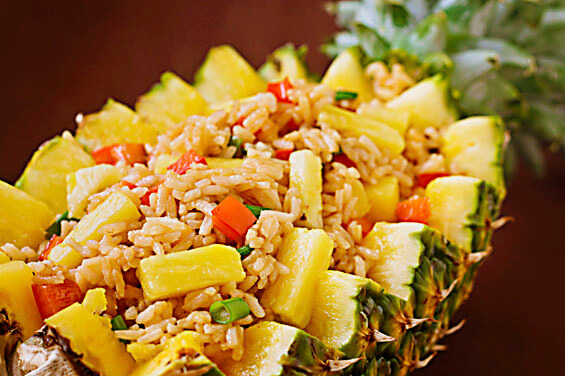

WELCOME TO ODIN RECIPES
PINEAPPLE FRIED RICE

DESCRIPTION
This Thai Pineapple Fried Rice recipe is easy to make, healthy, and DELICIOUS. With the right amount of sweet and savory flavors, it's perfect for pairing with chicken, beef, shrimp, tofu, or eating as a vegetarian dinner on it's own!
COURSE: DINNER
CUISINE: ASIAN, THAI
COOK TIME: 25 mins
SERVES: 6
INGREDIENTS
Marinade
- 1 1/2 cup Jasmine Rice from Mahatma Rice
- 2 Tbsp coconut oil
- 2 garlic cloves (minced)
- 1 medium bell pepper (chopped)
- 1 cup cashews
- 1/4 cup chopped green onions
- 1 cup cubed pineapple (approx 1/4" cubes)
- 2 large eggs
- 2 Tbsp soy sauce
- 1/2 Tbsp honey
- 1 Tbsp curry powder
- 1/2 tsp ground pepper
INSTRUCTIONS
Marinade
- Cook the rice according to directions.
- Heat up 1/2 of the coconut oil in a skillet over medium-high heat.
- Add in the garlic and saute for a few minutes.
- Add in the chopped bell pepper, green onion, and cashews and continue cooking for another 5-7 minutes.
- When the bell pepper begins to soften, add in the pineapple and continue to cook for another 5-7 minutes. Set aside.
- Add the remaining oil to the pan and scramble the eggs. Set aside.
- While the eggs are cooking, mix the soy sauce, honey, ground pepper, and curry powder.
- Add the cooked rice to the skillet along with the sauce mixture and stir-fry for about 5 minutes.
- Add the ingredients back in and stir-fry for another 5 minutes.
- Serve and Enjoy!
Back to top